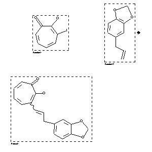

|  |
| FA | RX(1); FLST(1); RX(1) |
Reaction (1 of 1)
| Reaction ID | 1767845 |
| Reactant BRN | 2042662; 136380 |
| Reactant | 3-iodo-tropolone; 5-allyl-benzo[1,3]dioxole |
| Product BRN | 4757270 |
| Product | 3-(3-benzo[1,3]dioxol-5-yl-propenyl)-2-hydroxy-cyclohepta-2,4,6-trienone |
| No. of Reaction Details | 1 |
Reaction Details (1 of 1)
| Reaction Classification | Preparation |
| Yield | 34 percent (BRN=4757270) |
| Reagent | Et3N |
| Catalyst | Pd(PPh3)4 |
| Solvent | tetrahydrofuran |
| Temperature | 100 - 110 |
| Citation Pointer | 5586569; Journal; Horino, Hiroshi; Asao, Toyonobu; Inoue, Naoto; BCSJA8; Bull.Chem.Soc.Jpn.; EN; 64; 1; 1991; 183-190; |
Reference (1 of 1)
| Citation Number | 5586569 |
| Document Type | Journal |
| Authors | Horino, Hiroshi; Asao, Toyonobu; Inoue, Naoto |
| CODEN | BCSJA8 |
| Journal Title | Bull.Chem.Soc.Jpn. |
| Language Code | EN |
| (Series) Volume | 64 |
| Number | 1 |
| Publication Year | 1991 |
| Page | 183-190 |